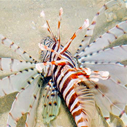

|
|
| fishes text index | photo index |
| Phylum Chordata > Subphylum Vertebrata > fishes > Family Scorpaenidae |
| Lionfish Pterois sp. Family Scorpaenidae updated Oct 2020 Where seen? This magnificent fish is sometimes seen on our Southern shores. Elsewhere, they are found in sheltered lagoons, seaward reefs often sheltering under ledges during the day. Features: Grows to about 30cm. Brown striped with broad median fins made up of flappy rays. The dorsal fins also long and flappy rays. The sting is extremely painful but rarely fatal. Russel's lionfish (Pterois russelii) does not have spots on the median fins. Volitans lionfish (Pterois volitans) has spots on the median fins. |
 Pulau Hantu, Aug 15 Photo shared by Loh Kok Sheng on his blog. |
 Russel's scorpionfish (Pterois russelii) Pulau Hantu, Aug 15 Photo shared by Loh Kok Sheng on his blog. |
| What does it eat? It feeds on fishes and crustaceans, using its broad median fins to herd the prey. |
|
Lionfish at Pulau Hantu from Loh Kok Sheng on Vimeo. |
| Family
Scorpaenidae recorded for Singapore from Wee Y.C. and Peter K. L. Ng. 1994. A First Look at Biodiversity in Singapore. in red are those listed among the threatened animals of Singapore from Ng, P. K. L. & Y. C. Wee, 1994. The Singapore Red Data Book: Threatened Plants and Animals of Singapore. **from WORMS +Other additions (Singapore BIodiversity Records, etc)
|
Links
|